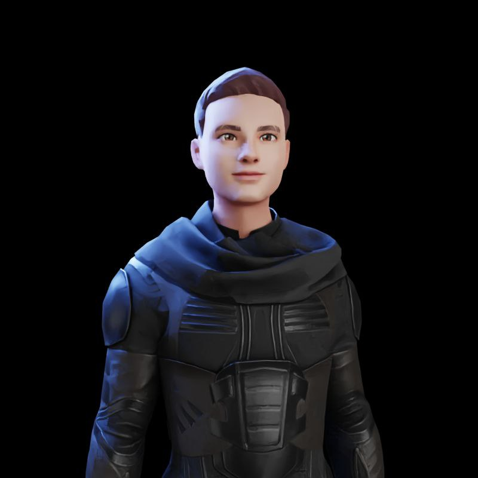

Резюме
Личная информация:
Имя/Фамилия/Отчество: Корнев Данил Сергеевич
Возраст: 24 года
Страна происхождения: Российская Федерация
Дата рождения: 29.05.1998
Пол: Мужской
Семейное положение: Холост
Вредные привычки: Нет
Имя/Фамилия/Отчество: Корнев Данил Сергеевич
Возраст: 24 года
Страна происхождения: Российская Федерация
Дата рождения: 29.05.1998
Пол: Мужской
Семейное положение: Холост
Вредные привычки: Нет
Учебное заведение: Tel-ran
Направление: Backend developer
Год окончания: 13.09.2022-2023
Форма обучения: Онлайн
Учебное заведение: Калининградский филиал Московского финансово-юридического университета
Год окончания: 2021
Факультет: Гражданско-правовой Специальность: Юриспруденция
Форма обучения: Очная
Год окончания: 2017
Факультет: Основы правовых знаний
Специальность: Право и организация социального обеспечения
Форма обучения: Очная
Организация: Агентство по делам молодежи Калининградской области
Должность: Помощник юриста
Период работы: с 03.05.2021 по 30.05.2021 (1 месяц)
Должностные обязанности: Моя деятельность в Агентстве состояла в выполнении следующих задач:
-выгрузке полного списка поданных заявок на грантовые конкурсы;
-создание базы данных в экселевском документе, распределение проектов участников по следующим номинациям:
-проекты, направленные на пропаганду традиционных семейных ценностей, поддержку молодых семей, популяризацию института семьи;
-проекты, направленные на развитие и поддержку молодежных коллегиальных совещательных структур и/или органов молодежного самоуправления образовательных организаций (молодежные парламенты, правительства, советы обучающихся,студенческие советы, студенческие общественные объединения);
-проекты, направленные на противодействие экстремизму в молодежной среде и развитие межнациональных отношений;
-проекты, направленные на социализацию и профилактическую работу с молодыми людьми следующих категорий:
- детьми-сиротами и детьми, оставшимися без попечения родителей, детьми с ограниченными возможностями здоровья;
-находящимися «в конфликте с законом»;
-употребляющими психоактивные вещества;
-людьми без определенного места жительства;
-проекты, направленные на развитие литературы, изобразительного искусства, хореографии (танцев), фотографии, театрального мастерства, кинематографии, музыки и иных видов искусства;
-проекты, направленные на создание в общедоступных городских (сельских) пространствах площадок (территорий), предназначенных для свободного самовыражения, творческой деятельности и взаимодействия молодежи, а также на создание малых архитектурных форм;
-проекты, направленные на развитие молодежных средств массовой информации и иных каналов информирования молодежи, в том числе групп и аккаунтов в
-проекты, направленные на развитие и осуществление добровольческой (волонтерской) деятельности;
-проекты, направленные на пропаганду здорового образа жизни и питания, поддержку различных видов физической активности и популяризацию уличных видов спорта, повышение культуры безопасного поведения;
-проекты, направленные на развитие и поддержку патриотического воспитания молодежи, формирование российской идентичности, противодействие попыткам фальсификации и искажения истории в ущерб интересам России;
проекты, направленные на профориентацию детей и молодежи, содействие занятости молодежи и на поддержку молодых специалистов;
-правка/исправление грамматических недочетов в заполненных заявках;
-пересчет сметы для экспертной комиссии, чтобы указать точную сумму выплаты гранта в форме дивидендов последующим победителям конкурсов;
-работа с личными документами участников, проверка на подлинность через запросы в правоохранительные органы государственной власти и наличие прописки в Калининградской области;
-работа с налоговой службой, отправка запросов на наличие задолженностей и непогашенных штрафов;
-формирование групп участников конкурсов в социальной сети ВКонтакте, обработка входящих/исходящих запросов по проектной деятельности и защите;
-оформление оценочного листа проектов через эксель для экспертной комиссии;
-составление и утверждение расписания защиты проектов;
-создание уведомления о прохождении или не прохождении заявочной компании;
-создание листа регистрации при защите проектов;
-создание соглашений о выплате дивидендов в форме грантов для некоммерческих организаций;
-помощь в изменении/дополнении констатирующей (преамбулы) части Приказа Агентства по делам молодежи Калининградской области № 59 от 23 декабря 2019 года.